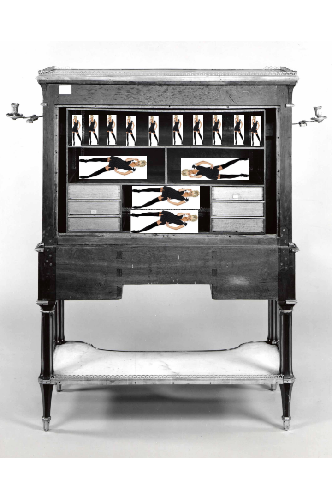

Ceci n’est pas un tuto.
Ceci n’est pas un horoscope.
Ceci est une médition.
Il me semble qu’on devrait apprendre aux femmes à écrire
pas parce qu'elle ne savent écrire
mais parce qu'elle doivent écrire à l'Université
comme elles écriraient au monde.
Depuis le début de ma scolarité, mon écriture a connu de multiples mues et j’ai réalisé, avant même l’écriture du Manisfeste p.m. que les échanges, surtouts sextuels textuels, m’imposent, peut-être plus que les autres espaces de ma vie, une réalité de ce que je suis essentiellement, réalité que j’oublie constamment :
[Je] est une femme pour les autres sachants #
[Je] ne va pas à l’Université, dans son bureau, devant son clavier en le sachant… Mais heureusement – ironie assumée – les très sachants – tous sexes confondus – me rappellent ce que [Je] est, et que [Je] doit savoir ce qu’il est.
Ce qui implique plusieurs choses :
[Je] n'est pas née légitime dans les lieux de savoir
En 1958, la presse canadienne découvre qu’Une femme est « la toute première personne à enseigner en français l’“histoire de l’Homme” à l’Université de Montréal devant une classe complète de garçons ».
la priorité de [Je] n'est pas les petites mains, même s'il s'agit des miennes
Début 2021, un sondage annonce qu’en France 29 % des hommes sondés déclarent que le rôle principal d’Une femme est de prendre soin de son époux (un pourcentage en progression de huit points depuis 2015) et que 15 % des Françaises sondées approuvent cette affirmation.
[Je] ne peux pas être James Bond
Durant l’été 2019, Une femme pose sa candidature afin de remplacer Daniel Craig dans le rôle de James Bond, mais n’est finalement pas retenue.
[Je] est notoire, pastiche, mais non-nommée.
En mai 2020, Une femme devient suffisamment notoire pour justifier qu’un article de Wikipédia lui soit consacré, qui devient lui-même suffisamment notoire pour être médiatisé qui devient assez notoire pour figurer dans l’article Wikipédia, etc.
Une femme, sur Wikipédia ou ailleurs, est un lot qui m’emmerdeentrave et, selon moi et pour en avoir discuté avec [Je], son poids participe de la question des petites mains en ce qu’elle en fait un problème, non seulement épistémologique, mais culturel.
Ni meuble ni soumise #
Ceci n’est pas un remake du film La secrétaire de Steven S. (2002) – devenu aujourd’hui très problématique mais que j’adore toujours autant par ce biais.
Ceci est une série non-exhaustive de questions qui ne sont pas innocentes.
{{.cafetières}} : Pourquoi au sein d’une réunion d’hommes nous sommes celles qui fournissont le café ?
celles vers qui les têtes se retournent
celles que les yeux regardent (enfin) dans les yeux pour demander
plein d'une innocence génétique
« Il y a pas/plus de café ? »
{{.ignorantes}} : Pourquoi au sein d’une réunion d’hommes nous sommes celles dont on questionne les compétences ?1
celles vers qui les crânes se penchent
les paupières se plissent avec pitié et amusement
pour nous convoquer
« Excusez-moi si les concepts que j'invoque vous sont totalement abstraits et inconnus »
{{.poupées}} : Pourquoi pour les espaces de recherche – polysémie assumée – une secrétaire c’est une femme bonne – à ne pas confondre avec une bonne femme –
avec obligatoirement des talons trop haut,
une jupe trop courte
des décolletés trop là
et un secrétaire c’est un meuble ?
utile
victorien
victorieux
d'époque
Un secrétaire rempli de secrétaires
Moi
femme, secrétaire, cafetière,
jupe juste haute, talons juste là, décolletés juste courts,
je veux des dysfonctionnements de clichés
des hommes qui me demandent
puisqu'ils savent que je sais
où faire du café non-genré
où trouver la même jupe non-écossaise
où apprendre le latin vulgaire sans censure.
Rage écrit #
J’ai dit dans Mea Culpa pour l’usurpation2 :
[j]’ai masculinisé mon rapport à l’écriture
Et ce n’est pas complètement juste.
Au-delà de la solution de l’usurpation d’identité et même de statut matrimonial
le temps d'un échange j'ai été l'autre femme de M. Mark Mellet
un hack de Charybde à Scylla, de la bonne secrétaire à la petite femme un peu simples
je et [Je] pensent que la véritable chose à faire dans son rapport à notre écriture et de la mettre en colère
lui donner l'ire et le feux
l'aiguiser sur les sérifs
la blinder en amazone
la manifester dans la page.
Voici ce que je retiens de mes mues sucessives pour acquérir une autorité :
{{.[ch]arme}} Il faut déjouer le danger du charme ou alors en jouer en arme
si ces attributs culturels sont autant de contraintes d'un corps par rapport à un autre
les talons vertigineux nous empêchant de courir
les ongles nous bridant les gestes
autant les assimiler en armes
les pointes des aiguilles à semelles
les lames des pédicures à paillettes
{{.inexcuse}} Il ne faut pas s’excuser d’être ou d’écrire
on affirme, expose, déclare, dit
on ne propose pas, ne suggère pas au delà d'une diplomatique politesse
Je [femme] verbe actif complément agent
sans conditionnel
sans adverbe d'incertitude
{{.crocs}} Il ne faut pas lécher lâcher une argumentation
celle qui nous sera destinée sera toujours plus longue, plus acerbe, plus amère
et elle nous prendra du temps, de l'énergie, des cafés faits par nous-mêmes
si elle doit lâcher prise, reconnaître la raison du correspondant
ce sera par sa justesse et non par son sexisme
Ce n’est certes pas juste – et tout ce post s’écrit avec l’insolence de ne pas chercher à apaiser les tensions – mais [une femme] ne peut écrire comme [un homme] écrit parce que le [Je] qu’elle est pour ceux qui savent conditionne non seulement la réception des mots qu’elle emploiera, mais également le choix des mots qui lui seront envoyés en réponse.
Je résumerai ces conseils par l’idée de rage
on nous dit hystériques
on nous encourage à être engagées
soyons enragées.
-
Je garderai toujours en tête ce moment où, lors d’une conférence sur la littérature latine, un homme ou une ombre – difficile de savoir désormais –, avant de poser une question de latiniste, avait présenté ses
exclusesexcuses envers les deux seules têtes, dans une salle pleine d’humanistes non latinistes, à avoir une formation de latiniste, … et à avoir un organe féminin. ↩︎ -
<3 Mark ↩︎